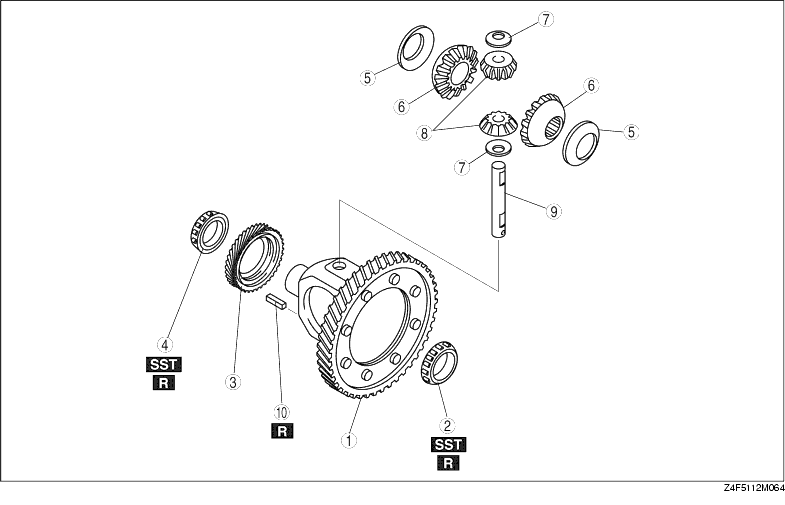

1. Assemble in the order shown in the figure.

|
1 |
Ring gear and gear case component |
|
2 |
Bearing (ring gear side) |
|
3 |
Speedometer drive gear |
|
4 |
Bearing (side opposite ring gear) |
|
5 |
Thrust washer |
|
6 |
Side gear |
|
7 |
Thrust washer |
|
8 |
Pinion gear |
|
9 |
Pinion shaft |
|
10 |
Roll pin (See Roll Pin Assembly Note) |
1. Install the new bearing using the SST.
1. Install the speedometer drive gear.
2. Install the new bearing using the SST.
1. Install the new roll pin as shown in the figure to hold the pinion shaft.
2. Measure the backlash by the following procedure.